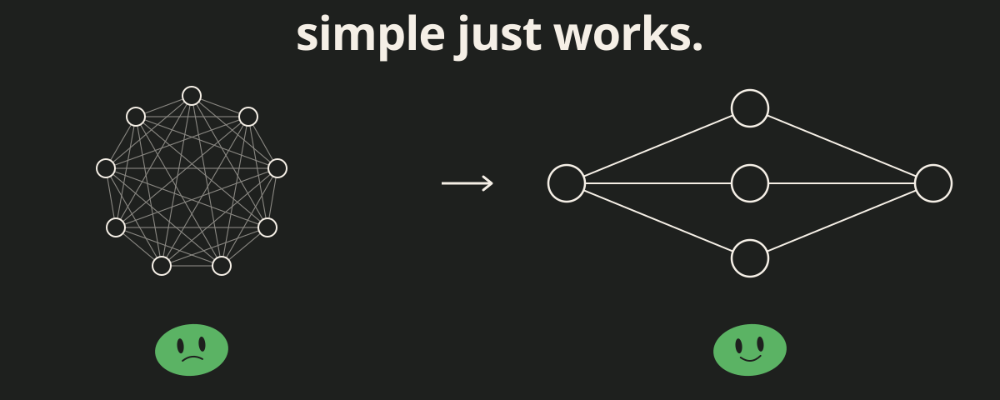
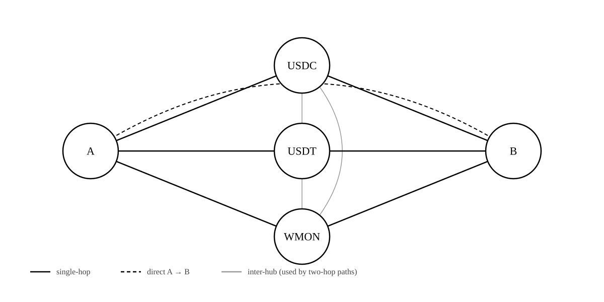

Simple just works: how i built puddleswap

Any problem yields to enough complexity.
I caught myself almost doing exactly that on puddleswap. Here’s how that went, plus the gut-check I run now before writing anything clever. If you ever feel yourself overengineering things, this is for you.
I was at a Monad Blitz event, if I am not mistaken it was the one in Ankara, and I was watching everyone around me hack on cool stuff while I sat in the corner answering their questions. I mean that’s my job but it felt weird not building stuff.
So at some point I figured I should just build something(while talking to people at the same time lol). Something simple enough that the brag would be how little it took, not how clever it was.
That’s how puddleswap happened. A no-bs DEX on Monad testnet, the kind a weekend buys you.
Going in, I wanted the fewest moving parts I could get away with. The thing I’d be most proud of would be how little there was to maintain.
Most of the actual work was done by an AI agent. It wrote the React frontend, deployed the contracts, and put together the swap UI. The contracts are stock Uniswap V2, audited a thousand times over the years(centuries in web3) and not something I wanted to fork. The frontend is Vite plus React with no backend anywhere. The swap accepts real Circle USDC, a mock USDT we deployed for testnet liquidity, and WMON. A small rebalancer service keeps the price pegs roughly honest.
It’s live at app.puddleswap.org.
The build was mostly uneventful. The agent did its thing, I reviewed diffs, we iterated. What I want to talk about is the one decision I almost got wrong: the routing.
The thing I almost overengineered
Standard answer for “how does a DEX UI route swaps” is a graph algorithm. You have N tokens and M pools, build the liquidity graph, run shortest-path weighted by output amount, return the best route. 1inch and Matcha both work this way and every aggregator article online tells you to do the same, so I started writing it.
Then I looked at my actual data.
Three “core” tokens: USDC, USDT, WMON. Maybe ten pools, every one of them touching at least one core. I was writing a graph algorithm to solve a problem I didn’t have.

So I deleted it and wrote this instead (s/o to @danielvf for the idea + the initial PRD).
The enumeration
For any swap A → B, enumerate every plausible route through the hubs:
- Direct:
A → B - Through one hub:
A → USDC → B,A → USDT → B,A → WMON → B - Through two hubs:
A → USDC → USDT → B,A → USDC → WMON → B,A → USDT → WMON → B, and reverses
That’s at most ten candidate paths. Send all ten quote requests in one multicall, pick the path with the highest output, swap on that.
const routes = buildCandidateRoutes(tokenIn, tokenOut, cores);
const results = await publicClient.multicall({
contracts: routes.map((path) => ({
address: router,
abi: routerAbi,
functionName: "getAmountsOut",
args: [amountIn, path],
})),
allowFailure: true,
});
const best = selectBestQuote(results);The whole router is around 50 lines. It builds the candidate list, dedups it, and returns whichever path the multicall said had the highest quote.
Why this matters (and not just for DEXes)
I’m not saying graph routing is wrong. For a mainnet aggregator routing across thousands of pools and dozens of DEXes, it’s the right tool. I’m saying I wasn’t building that.
Here’s the lesson: a lot of code over-solves its problem.
You see it everywhere once you start looking. Sorting algorithm where the data is always ≤ 10 items (insertion sort is fine, stop). Caching layer where the data hits the database twice a day (the database is already a cache). Pub/sub where there’s one publisher and one subscriber (call the function directly).
The smart-looking solution is usually someone solving the *general* problem, because that’s what they were trained on. The general problem is harder, more interesting, and absolutely useless to you if your constraints are narrower.
On puddleswap, my constraints are:
- One chain, one DEX, mine
- Three hub tokens I control
- Operator-maintained liquidity
- Test users with low gas budgets
Within those constraints, enumeration is provably correct (every meaningful route gets checked), faster than graph traversal (one batched RPC, not N round-trips), and a fraction of the code. The day any of those constraints stops holding is the day I’ll bother writing the graph router.
When this breaks
I’d be lying if I said this scales. Obvious failure modes are:
- Exotic-to-exotic pools that bypass the hubs entirely. Enumeration misses them.
- A hub runs dry of liquidity on one side. Router still checks routes through it and eats a bad quote.
The end
If you’re building on Monad testnet and need swaps for your tests, puddleswap is live at app.puddleswap.org. The router is at puddleswap/web/src/lib/routing.ts.
And next time you reach for the complex solution, check whether your problem actually needs it. It probably doesn’t.
And maybe ask your agent if there are any easier solutions to the problem you are trying to solve.
Related: How a button I built for one docs site ended up on twenty - the same heuristic applied to a different problem.
Questions?